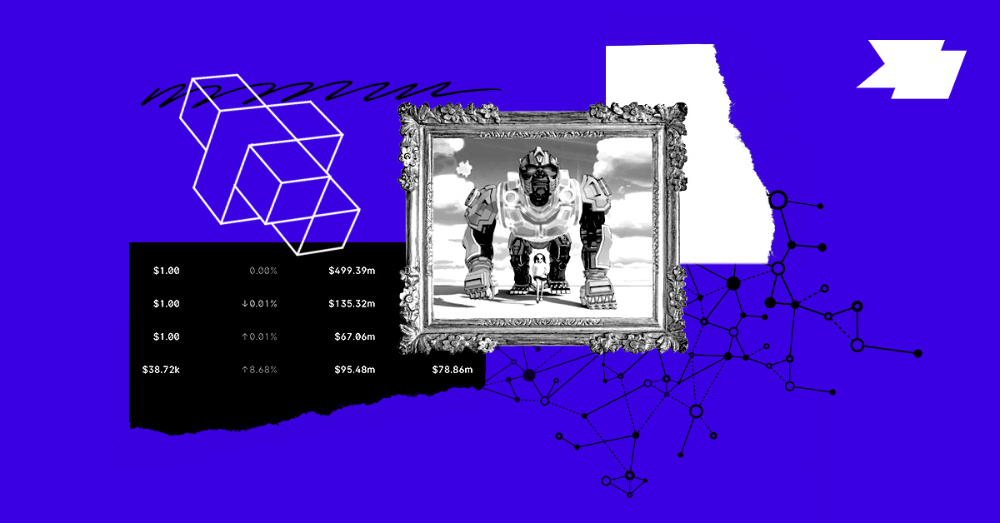

Web3 has seeped into the mainstream, from Paris Hilton displaying her NFTs on the Tonight Show to ConstitutionDAO trying to purchase one of the last remaining copies of the Constitution. Yet getting into web3 is still a tangled, confusing experience aimed at early adopters. There’s a whole group of digitally native people — let’s call them “web2.5” — who are curious about crypto but probably not enthusiastic enough about web3 to tolerate onboarding.
If web3 builders keep asking new web2.5 users to leap into the unfamiliar world of web3 without assets, a network, status, or history, broad adoption will be hard to achieve. Making onboarding simpler is one answer, and many new web3 companies are centered on that exact aim. But for cultural and technical reasons alike, onboarding will likely stay complicated for the foreseeable future. Here’s another approach: What if we show web2.5 users the advantages of web3 first, and then provide a bridge for them to cross? We think that bridge could be “community composability,” a fresh take on a long-standing computer science idea.
A16z’s Chris Dixon defines composability as “the ability to mix and match software components like lego bricks … every software component only needs to be written once, and can thereafter simply be reused.” We’re using the phrase community composability to describe how communities can be layered together, like building blocks, to form new strata of communities.
Web3 builders could draw web2.5 users into web3 by bringing their scattered web2 history into one unified digital identity. Although community composability is not a cure-all for every product category, it can help builders form stickier communities by connecting subcommunities in passion areas, and it can also support projects that benefit all participants by letting anyone in web3 contribute benefits and experiences to community members.
We’re still in the early chapters of consumer crypto. As co-founders of a new web3 company, and former NFT project leaders and community managers, we’ve learned that genuinely successful consumer crypto products have to meet web2.5 where they are. Community composability offers web2.5 users a path to fully “own their clout.”
How composability is used in web3 today
Examples of community composability in web3 already exist. Still, it’s worth noting that in these cases, composability is mostly being applied to give web3 early adopters even more benefits. (For example, DeFi farming lets crypto-native users make more crypto with their crypto by shifting their assets across different lending marketplaces and newer protocols.) By contrast, we’re suggesting expanding the web3 user base by showing web2.5 users how web3 makes ownership and digital identity possible.
Derivative NFT projects, meaning offshoots or blends of existing popular projects, are one example of community composability. Bored Ape Yacht Club, for instance, has many derivatives attempting to benefit from its name. Some, like Mutant Ape Yacht Club and Bored Ape Kennel Club, were made by Yuga Labs, the creators of BAYC. Other creators have extended BAYC’s art, style, and traits to build their own unrelated projects, such as Jacked Ape Club, Apocalyptic Apes, and Apes In Space. Azuki Mfers, a collection whose art combines the blue chip Azuki collection and the meme-y Mfers collection, has recorded over 360 ETH of transactions, even though the creators are neither affiliated with nor endorsed by the creators of Azuki or Mfers. These derivative projects attempt to unite the parent collection’s community and outside fans who have not been able to take part yet — either because the entry price is too high, or because the derivative art and roadmap appeal to them more. Often, members of the parent ecosystem do not engage with the derivatives.
Finally, profile picture NFT accessory projects, or digital assets used to accessorize PFPs, are strong examples of the more visible consumer-facing side of community composability, since they can bring together several communities through one shared marketplace. 10ktf, a project backed by Beeple, makes backpack or shoe NFTs featuring your personal Ape, which you could potentially also “wear” in future metaverse ecosystems. 10ktf supports several popular collections including BAYC, Cool Cats, Forgotten Runes Wizard’s Cult, and World of Women, meaning that only holders of those collections can take part. Gucci’s recent collaboration announcement was an incredible milestone and win for the entire 10ktf community, which draws from all of the PFPs that it currently supports.
Building a web2 –> web3 bridge
In an earlier Future essay, crypto founder Linda Xie praised the power of composability as one of the most powerful aspects of crypto: “Because composability allows anyone in a network to take existing programs and adapt or build on top of them, it unlocks completely new use cases that don’t exist in our world.”
She’s right. But it’s important to see that composability isn’t only a crypto concept, or even only a software concept. Web2 companies often use composability to grow their customer bases, even when they never name it that way. A useful example is the coffee subscription-box startup Cometeer, which sends a range of flash-frozen coffee pods from well-known coffee shops like Joe’s Coffee or Equator Coffee each month. Every box includes coffee from brands the customer already loves, along with new brands they have not tried yet. In this way, Cometeer “composes” groups of brand loyalists into its customer base. Targeted ads also demonstrate composability in action: companies pull customers from existing databases.
These web2 examples show “customer base” composability rather than true community composability, which results in the creation of new or stronger bonds between fellow fans or creators and their followers. In broad terms, a community is a group of people who gather around a shared interest or identity. Communities are central to the success of any crypto project.
While web2 passion spaces are full of community members, they are fragmented. Fitness is a clear example: A workout enthusiast’s web2 “clout” is scattered across different databases — Rumble doesn’t recognize Barry’s loyalty status; miles recorded at SoulCycle don’t appear on Peloton.
Builders can use community composability as a bridge to web3 by bringing together siloed groups across fitness and other passion spaces. In the fitness example, a web3-native platform could display your logged workouts from different classes, and all of the status you’ve accumulated through various fitness memberships would be unified to create your on-chain digital fitness identity. That means users can own their complete clout, and receive rewards from anyone based on their past actions. This hypothetical ecosystem is not possible in web2, where communities cannot permissionlessly compose with one another. For web2.5 users who make the web3 leap, however, fitness shifts from an interest defined by a centralized company to one they own and can more easily share with other exercise junkies.
We have not yet seen the full potential of web3 consumer applications. But we can imagine how web3 builders could use community composability: Why not build a new developer platform with a $CODE token that rewards the most active contributors on StackOverflow, open source Github repos, and r/programming? Or imagine giving the top verified reviewers from Yelp, DoorDash, UberEats, and Foursquare a $MICHELIN token to jumpstart a trusted web3 food community, which would bring on users who care more about discovering new restaurants than, say, buying an NFT (currently the most common web3 onramp).
If we can create consumer crypto products that meet web2.5 where they are, instead of asking them to adopt a new behavior, wouldn’t they be more likely to explore web3? There’s a chance to extend web3 beyond the earliest adopters, and show how meaningful community-owned products are. We believe the teams that seize this chance will gain compounding benefits and help drive web3 growth.